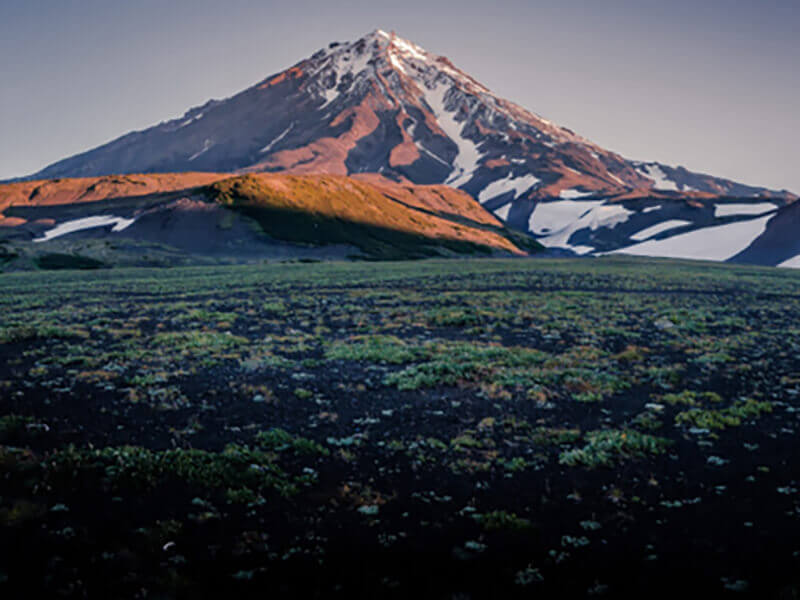
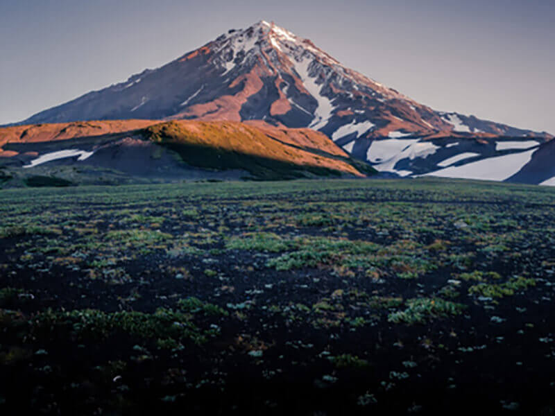

What haven't we seen there?
According to VCIOM polls, 95 percent of Russians dream of going somewhere, but only 36 percent plan to spend their vacation in their native country. What haven't we seen here at home? In fact, Russia is a whole universe, with the gentle sea of the south, the thick forests of the Sayan Mountains and the harsh ice of the Putorana Plateau. And you can see all these beauties without millions in the account, a passport, or hours of flying. Like Vera Bashmakova, a brave young mother who took her three children in an armful, put them in her Lada and drove 20,000 kilometers across her native country. We have chosen and described some interesting places worthy of your vacation.
- Time zones 11
- UNESCO natural heritage sites 12
- UNESCO cultural heritage sites 16
- Natural reserves 105
- Airports 241


 
